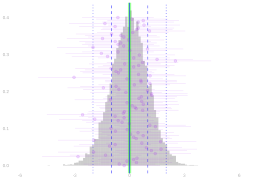

| income50k | income | education | county | |
|---|---|---|---|---|
| 1 | 0 | $44k | 16 | LA |
| 2 | 0 | $28k | 12 | unknown |
| 3 | 0 | $49k | 16 | LA |
| <U+22EE> | NA | NA | NA | NA |
| 5677500 | 1 | $157k | 12 | orange |
Random Variables and Moments
Random Variables
$$ \newcommand{X}{} \newcommand{Y}{}
$$
Observations as Random Variables


- The notation \(y_j\) refers to a number.
- It’s the income of the \(j\)th person in our population. That’s just some person.
- The notation \(Y_i\) refers to something else.
- It’s the income of the \(i\)th person we call in our survey. That’s not a person.
- That’s the result of a random process—the roll of a die.
- To summarize this result, we talk about the probability distribution of \(Y_i\).
Notation Conventions
- Random variables are written in uppercase: \(X\), \(Y\), \(Z\), etc. Constants are written in lowercase: \(x\), \(y\), \(z\), etc.
- We’ll use the same letter for a random variable and the value it takes on. \(x\) is a possible value of \(X\), \(y\) of \(Y\), etc.
- Estimators are also random variables, but instead of uppercase we use a hat: \(\hat\theta\),\(\hat \mu\), \(\hat \sigma\), etc.
- We’ll use the same letter for the estimator and what it’s meant to estimate.
- \(\hat \mu\) is an estimator of \(\mu\); \(\hat\theta\) is an estimator of \(\theta\).
- We’ll use \(\theta\) and \(\mu\) in different but ocassionally overlapping ways.
- \(\mu\) will be our population mean and \(\mu(x)\) the mean in the subpopulation with \(X=x\).
- \(\theta\) will be our estimation target.
- So far, it’s often been the population mean, so \(\theta=\mu\).
- Or a subpopulation mean, so \(\theta=\mu(x)\).
- Later in the semseter, it’ll tend to be something a bit more complicated.
Probability Distributions: The Binary Case
| roll | income50k | income | education | county | |
|---|---|---|---|---|---|
| 1 | 1017 | 1 | $266k | 16 | LA |
| 2 | 8004 | 1 | $51k | 13 | san joaquin |
| 3 | 4775 | 0 | $0k | 16 | orange |
| <U+22EE> | NA | NA | NA | NA | NA |
| 2271 | 12927 | 0 | $45k | 16 | LA |
- When our outcomes are binary, it’s easy to describe this distribution.
- All we need to know is the probability that \(Y_i\) is 1. Why?
- To do that, we sum the probabilities of the rolls that result in it being one.
\[ P(Y_i = 1) = \sum_{j: y_j = 1} P(\text{roll}_i = j) = \sum_{j: y_j = 1} \frac{1}{m} \times y_j = \mu. \]
- This collapses out information about our random process that’s irrelevant to \(Y_i\).
- That is, it collapses the probability we roll each number in 1…m into our ‘weighted coin flip’.
Probability Distributions: The General Case
| income50k | income | education | county | |
|---|---|---|---|---|
| 1 | 0 | $44k | 16 | LA |
| 2 | 0 | $28k | 12 | unknown |
| 3 | 0 | $49k | 16 | LA |
| <U+22EE> | NA | NA | NA | NA |
| 5677500 | 1 | $157k | 12 | orange |
| roll | income50k | income | education | county | |
|---|---|---|---|---|---|
| 1 | 1017 | 1 | $266k | 16 | LA |
| 2 | 8004 | 1 | $51k | 13 | san joaquin |
| 3 | 4775 | 0 | $0k | 16 | orange |
| <U+22EE> | NA | NA | NA | NA | NA |
| 2271 | 12927 | 0 | $45k | 16 | LA |
- When our outcomes are are nonbinary, it’s a bit more complicated.
- We need to know the probability that \(Y_i\) takes on each possible value.But we calculate it the same way.
- We sum the probabilities of the rolls that result in it taking on those values.
\[ P(Y_i = y) = \sum_{j: y_j = y} P(\text{roll}_i = j) \]
- We’re still collapsing out irrelevant information, but what we’re left with is more complicated.
- It’s a weighted die roll, with one face for each possible value of \(Y_i\).
- And If each person’s income is different, then there’s nothing to collapse out. Then, … \[ P(Y_i = y) = \begin{cases} \frac{1}{m} & \qqtext{for} y \in y_1 \ldots y_m \\ 0 & \qqtext{otherwise} \end{cases} \]
Expectations
| income50k | income | education | county | |
|---|---|---|---|---|
| 1 | 0 | $44k | 16 | LA |
| 2 | 0 | $28k | 12 | unknown |
| 3 | 0 | $49k | 16 | LA |
| <U+22EE> | NA | NA | NA | NA |
| 5677500 | 1 | $157k | 12 | orange |
| roll | income50k | income | education | county | |
|---|---|---|---|---|---|
| 1 | 1017 | 1 | $266k | 16 | LA |
| 2 | 8004 | 1 | $51k | 13 | san joaquin |
| 3 | 4775 | 0 | $0k | 16 | orange |
| <U+22EE> | NA | NA | NA | NA | NA |
| 2271 | 12927 | 0 | $45k | 16 | LA |
- That said, we often don’t need to know the whole distribution.
- Often the only thing we care about is the expected value of \(Y_i\). Or some related quantity.
- The expected value of \(Y_i\) is the probability-weighted average of the values it can take on.
- What’s nice about this is that we can think of this in ‘uncollapsed’ terms.
- When we sample as usual, this is just the population mean.
- The collapsed form is, in a sense, just summing in a different order.
\[ \begin{aligned} \mathop{\mathrm{E}}[Y_i] = \sum_y P(Y_i = y) \times y = \sum_y \p*{\sum_{j: y_j = y} \frac{1}{m}} \times y = \frac{1}{m}\sum_y\sum_{j:y_j = y} y = \frac{1}{m}\sum_{j=1}^m y_j \end{aligned} \]
Expectations
| income50k | income | education | county | |
|---|---|---|---|---|
| 1 | 0 | $44k | 16 | LA |
| 2 | 0 | $28k | 12 | unknown |
| 3 | 0 | $49k | 16 | LA |
| <U+22EE> | NA | NA | NA | NA |
| 5677500 | 1 | $157k | 12 | orange |
| roll | income50k | income | education | county | |
|---|---|---|---|---|---|
| 1 | 1017 | 1 | $266k | 16 | LA |
| 2 | 8004 | 1 | $51k | 13 | san joaquin |
| 3 | 4775 | 0 | $0k | 16 | orange |
| <U+22EE> | NA | NA | NA | NA | NA |
| 2271 | 12927 | 0 | $45k | 16 | LA |
- What’s nice about the binary case is, in fact, that it’s an expectation.
- When \(Y_i\) is binary, the probability it’s 1 is its expected value \(Y_i\).
\[ \begin{aligned} P(Y_i=1) = \sum_{j: y_j = 1} P(\text{roll}_i = j) &= \sum_{j:y_j=1} \frac{1}{m} \\ &= \sum_{j=1}^m \frac{1}{m} \times \begin{cases} 1 & \ \ \text{ if } y_j = 1 \\ 0 & \ \ \text{ otherwise} \\ \end{cases} \\ &= \sum_{j=1}^m \frac{1}{m} \times y_j = \mathop{\mathrm{E}}[Y_i]. \end{aligned} \]
- In fact, we like expectations so much that we often use them to work with probabilities.
\[ P(Z \in A) = \mathop{\mathrm{E}}[1_A(Z)] \qfor 1_A(z) = \begin{cases} 1 & \qqtext{ for } z \in A \\ 0 & \qqtext{ otherwise} \end{cases} \]
Independence


- Random variables are independent if …
- … in intuitive terms, knowing the value of one doesn’t tell us anything about the value of the other.
- … in mathematical terms, their joint probability distribution is the product of their individual marginals ones.
\[ P(Y_1 ... Y_k = y_1 \ldots y_k) = P(Y_1=y_1) \times \ldots \times P(Y_k=y_k). \]
- That’s what happens when the randomness in each \(Y_i\) comes from a different roll of the die.
- And since that’s how we’re doing our sampling in the Current Population Survey, it’ll be true in our sample.
- Because we draw each of our observations the same way, they also have the same probability distribution.
Independence, the Version We Actually Use
- The definition above is a statement about the joint distribution.
- The version we use in calculations is a statement about functions.
- If \(Y\) and \(Z\) are independent, then …
\[ \mathop{\mathrm{E}}[f(Y)g(Z)]=\mathop{\mathrm{E}}[f(Y)]\mathop{\mathrm{E}}[g(Z)] \]
- For example, \(Y-\mathop{\mathrm{E}}Y\) and \(Z-\mathop{\mathrm{E}}Z\) are still functions of separate independent random variables.
- Their product therefore has expectation zero.
- This is the fact that will make the cross-terms disappear when we calculate the variance of a sum.
- We say they’re independent and indentically distributed.
- At least, that’s what we’re pretending when we analyze CPS data in this class. Reality is more complicated.
Working with Expectations
Linearity of Expectations


\[ \begin{aligned} E ( a Y + b Z ) &= E (aY) + E (bZ) \\ &= aE(Y) + bE(Z) \\ & \text{ for random variables $Y, Z$ and numbers $a,b$ } \end{aligned} \]
- There are two things going on here.
- To average a sum of two things, we can take two averages and sum.
- To average a constant times a random variable, we multiply the random variable’s average by the constant.
- In other words, we can distribute expectations and can pull constants out of them.
Proof
- In essence, it comes down to the fact that all we’re doing is summing.
- Expectations are probability-weighted sums.
- And we’re looking at the expectation of a sum.
- And we can change the order we sum in without changing what we get.
\[ \small{ \begin{aligned} \mathop{\mathrm{E}}\p*{ a Y + b Z } &= \sum_{y}\sum_z (a y + b z) \ P(Y=y, Z=z) && \text{ by definition of expectation} \\ &= \sum_{y}\sum_z a y \ P(Y=y, Z=z) + \sum_{z}\sum_y b z \ P(Y=y, Z=z) && \text{changing the order in which we sum} \\ &= \sum_{y} a y \ \sum_z P(Y=y,Z=z) + \sum_{z} b z \ \sum_y P(Y=y,Z=z) && \text{pulling constants out of the inner sums} \\ &= \sum_{y} a y \ P(Y=y) + \sum_{z} b z \ P(Z=z) && \text{summing to get marginal probabilities from our joint } \\ &= a\sum_{y} y \ P(Y=y) + b\sum_{z} z \ P(Z=z) && \text{ pulling constants out of the remaining sum } \\ &= a\mathop{\mathrm{E}}Y + b \mathop{\mathrm{E}}Z && \text{by definition} \end{aligned} } \]
Unbiasedness of Means
The Sample Mean


Claim. The sample mean is an unbiased estimator of the population mean. \[ \mathop{\mathrm{E}}[\hat\mu] = \mu \]
\[ \begin{aligned} \mathop{\mathrm{E}}\sb*{\frac1n\sum_{i=1}^n Y_i} &= \frac1n\sum_{i=1}^n \mathop{\mathrm{E}}[Y_i] && \text{ via linearity } \\ &= \frac1n\sum_{i=1}^n \mu && \text{ via equal-probability sampling } \\ &= \frac1n \times n \times \mu = \mu. \end{aligned} \]
Variance and Standard Deviation
What Variance Is
- Variance has two equivalent forms that reveal different things.
- Let \(Y'\) be an independent copy of \(Y\): same distribution as \(Y\), independent of it.
\[ \mathop{\mathrm{\mathop{\mathrm{V}}}}[Y] =\mathop{\mathrm{E}}[(Y-\mathop{\mathrm{E}}Y)^2] =\frac12\mathop{\mathrm{E}}[(Y-Y')^2] \]
- The first expression is the definition.
- The second says variance measures how different two independent draws tend to be.
- The factor \(1/2\) appears because both draws vary. Writing \(\mu=\mathop{\mathrm{E}}Y=\mathop{\mathrm{E}}Y'\) and expanding,
\[ \mathop{\mathrm{E}}[(Y-Y')^2] =\mathop{\mathrm{E}}[(Y-\mu)^2]+\mathop{\mathrm{E}}[(Y'-\mu)^2] -2\mathop{\mathrm{E}}[(Y-\mu)(Y'-\mu)] =2\mathop{\mathrm{\mathop{\mathrm{V}}}}[Y] \]
- … where independence makes the final cross-term zero.
The Variance of a Binary Response
- For a binary \(Y\) that equals one with probability \(\theta\), its mean is \(\theta\).
- Direct substitution into the definition implies
\[ \mathop{\mathrm{\mathop{\mathrm{V}}}}[Y] =\theta(1-\theta)^2+(1-\theta)\theta^2 =\theta(1-\theta) \]
- This is the one we’ll use for the rest of the lecture.
The Variance of an Independent Sum
- The independent-copy form makes the variance of an independent sum transparent.
- If \(Y_1 \ldots Y_n\) are independent and \(Y_1' \ldots Y_n'\) are independent copies,
\[ \begin{aligned} \mathop{\mathrm{\mathop{\mathrm{V}}}}\sb*{\sum_{i=1}^nY_i} &=\frac12\mathop{\mathrm{E}}\sb*{\left\{ * \right\}{\sum_{i=1}^n(Y_i-Y_i')}^2}\\ &=\frac12\sum_{i=1}^n\mathop{\mathrm{E}}[(Y_i-Y_i')^2] =\sum_{i=1}^n\mathop{\mathrm{\mathop{\mathrm{V}}}}[Y_i] \end{aligned} \]
- The mixed terms vanish because differences belonging to distinct independent pairs have mean zero.
- In homework we’ll prove the same result by centering the original variables and squaring out the sum.
- We need that second route later, when dependence makes the mixed terms survive.
Properties of Expectations: Factorization of Products
\[ \mathop{\mathrm{E}}[YZ] = \mathop{\mathrm{E}}[Y]\mathop{\mathrm{E}}[Z] \qqtext{when $Y$ and $Z$ are independent} \]
- The expectation of a product of independent random variables is the product of their expectations.
- Definition. Random variables are independent if their joint distribution is the product of their marginal distributions.
- When we sample with replacement, the responses to our calls are independent.
- When we sample without replacement, they’re not independent.
- Lack of independence isn’t necessarily a bad thing.
- It’s why sampling without replacement gives us better precision.
- But it can make some calculations, e.g. for the standard deviation of a mean, a bit more complicated.
- It does not make calculating the expectation of a mean any harder. Why?
\[ \begin{aligned} \mathop{\mathrm{E}}[YZ] &= \sum_{yz} yz \ P(Y=y, Z=z) && \text{by definition of expectation} \\ &= \sum_y \sum_z yz \ P(Y=y) P(Z=z) && \text{factoring and ordering sums } \\ &= \textcolor[RGB]{17,138,178}{\sum_y y \ P(Y=y)} \textcolor[RGB]{239,71,111}{\sum_z z \ P(Z=z)} && \text{pulling factors that don't depend on $z$ out of the inner sum} \\ &= \textcolor[RGB]{17,138,178}{\mathop{\mathrm{E}}[Y]} \textcolor[RGB]{239,71,111}{\mathop{\mathrm{E}}[Z]} && \text{by definition of expectation} \end{aligned} \]
The Standard Deviation of a Proportion
Sampling with Replacement
We’ve worked out the variance (i.e. the squared standard deviation) of a binary random random variable. \[ \mathop{\mathrm{\mathop{\mathrm{V}}}}[Y] = \theta(1-\theta) \qqtext{ when } Y = \begin{cases} 1 & \qqtext{ with probability } \theta \\ 0 & \qqtext{ with probability } 1-\theta \end{cases} \]
When we sample uniformly at random, our sample proportion is the mean of \(n\) independent variables like this.
\[ \mathop{\mathrm{\mathop{\mathrm{V}}}}[\hat\theta] = \mathop{\mathrm{\mathop{\mathrm{V}}}}\sb*{\frac1n \sum_{i=1}^n Y_i} = \mathop{\mathrm{E}}\sb*{ \left\{ * \right\}{ \frac1n \sum_{i=1}^n Y_i - \mathop{\mathrm{E}}\sb*{\frac1n \sum_{i=1}^n Y_i} }^2 } = \frac{\theta(1-\theta)}{n} \]
- We can calculate it in four steps.
- Centering each term.
- Squaring out the sum.1
- Distributing the Expectation.
- Taking the expectation term-by-term.
\[ \begin{aligned} \mathop{\mathrm{\mathop{\mathrm{V}}}}[\hat\theta] &\overset{\texttip{\small{\unicode{x2753}}}{Using the definitions of $\mathop{\mathrm{\mathop{\mathrm{V}}}}$ and $\hat\theta$}}{=} \mathop{\mathrm{E}}\sb*{ \left\{ * \right\}{ \frac1n \sum_{i=1}^n Y_i - \mathop{\mathrm{E}}\sb*{\frac1n \sum_{i=1}^n Y_i} }^2 } \\ &\overset{\texttip{\small{\unicode{x2753}}}{Step 1. Centering each term. We can do this because Expectation is linear.}}{=} \mathop{\mathrm{E}}\sb*{ \left\{ * \right\}{ \frac1n \sum_{i=1}^n \p*{Y_i - \mathop{\mathrm{E}}[Y_i]} }^2 } \\ &\overset{\texttip{\small{\unicode{x2753}}}{Step 2. Squaring out the Sum. This is just arithmetic: a version of $(a+b)^2=a^2+ab+ba+b^2$ for bigger sums.}}{=} \mathop{\mathrm{E}}\sb*{ \frac{1}{n^2} \sum_{i=1}^n \sum_{j=1}^n \p*{Y_i - \mathop{\mathrm{E}}[Y_i]}(Y_j - \mathop{\mathrm{E}}[Y_j]) } \\ &\overset{\texttip{\small{\unicode{x2753}}}{Step 3. Distributing the Expectation. Linearity of Expectation again.}}{=} \frac{1}{n^2} \sum_{i=1}^n \sum_{j=1}^n \mathop{\mathrm{E}}\sb*{ \p*{Y_i - \mathop{\mathrm{E}}[Y_i]}(Y_j - \mathop{\mathrm{E}}[Y_j]) } \\ &\overset{\texttip{\small{\unicode{x2753}}}{Step 4. Taking Expectations term-by-term.}}{=} \frac{1}{n^2} \sum_{i=1}^n \sum_{j=1}^n \begin{cases} \mathop{\mathrm{E}}\sb*{ \p*{Y_i - \mathop{\mathrm{E}}[Y_i]}^2 } \overset{\texttip{\small{\unicode{x2753}}}{By definition}}{=} \mathop{\mathrm{\mathop{\mathrm{V}}}}[Y_i] = \theta (1-\theta) & \text{ when } j=i \\ \mathop{\mathrm{E}}\sb*{ \p*{Y_i - \mathop{\mathrm{E}}[Y_i]} \p*{Y_j - \mathop{\mathrm{E}}[Y_j]} } \overset{\texttip{\small{\unicode{x2753}}}{Because $Y_i$ and $Y_j$ are independent.}}{=} \mathop{\mathrm{E}}\sb*{\p*{Y_i - \mathop{\mathrm{E}}[Y_i]}} \mathop{\mathrm{E}}\sb*{\p*{Y_j - \mathop{\mathrm{E}}[Y_j]}} \overset{\texttip{\small{\unicode{x2753}}}{Because each factor has mean zero.}}{=} 0 & \text{ when } j \neq i \end{cases} \\ &\overset{\texttip{\small{\unicode{x2753}}}{Because each sum over $j$ has one nonzero term---the one where $j=i$---and it's always $\theta(1-\theta)$}}{=} \frac{1}{n^2} \sum_{i=1}^n \theta(1-\theta) = \frac{1}{n^2} \times n \times \theta(1-\theta) = \frac{\theta(1-\theta)}{n} \end{aligned} \]
The variance of our mean is \(\color{\) the variance of one observation. \[ \mathop{\mathrm{\mathop{\mathrm{V}}}}\sb*{\frac1n\sum_{i=1}^n Y_i} = \frac{\mathop{\mathrm{\mathop{\mathrm{V}}}}[Y_1]}{n} \]
So the standard deviation of our mean is \(\color{\) the standard deviation of one observation.
\[ \mathop{\mathrm{sd}}\sb*{\frac1n\sum_{i=1}^n Y_i} = \frac{\mathop{\mathrm{sd}}[Y_1]}{\sqrt{n}} = \sqrt{\frac{\theta(1-\theta)}{n}} \]
The Standard Deviation of a Proportion
Sampling without Replacement
- When we sample without replacement, a lot of the same calculational steps still work.
- But the result we get is different, so we must’ve done something different. What’s different?
\[ \mathop{\mathrm{\mathop{\mathrm{V}}}}[\hat\theta] = \mathop{\mathrm{\mathop{\mathrm{V}}}}\sb*{\frac1n \sum_{i=1}^n Y_i} = \mathop{\mathrm{E}}\sb*{ \left\{ * \right\}{ \frac1n \sum_{i=1}^n Y_i - \frac1n \mathop{\mathrm{E}}[\sum_{i=1}^n Y_i] }^2 } = \frac{\theta(1-\theta)}{n} \times \frac{m-n}{m-1} \]
\[ \begin{aligned} \mathop{\mathrm{\mathop{\mathrm{V}}}}[\hat\theta] &\overset{\texttip{\small{\unicode{x2753}}}{Using the definitions of $\mathop{\mathrm{\mathop{\mathrm{V}}}}$ and $\hat\theta$}}{=} \mathop{\mathrm{E}}\sb*{ \left\{ * \right\}{ \frac1n \sum_{i=1}^n Y_i - \mathop{\mathrm{E}}\sb*{\frac1n \sum_{i=1}^n Y_i} }^2 } \\ &\overset{\texttip{\small{\unicode{x2753}}}{Step 1. Centering each term. We can do this because Expectation is linear.}}{=} \mathop{\mathrm{E}}\sb*{ \left\{ * \right\}{ \frac1n \sum_{i=1}^n \p*{Y_i - \mathop{\mathrm{E}}[Y_i]} }^2 } \\ &\overset{\texttip{\small{\unicode{x2753}}}{Step 2. Squaring out the Sum. This is just arithmetic: a version of $(a+b)^2=a^2+ab+ba+b^2$ for bigger sums.}}{=} \mathop{\mathrm{E}}\sb*{ \frac{1}{n^2} \sum_{i=1}^n \sum_{j=1}^n \p*{Y_i - \mathop{\mathrm{E}}[Y_i]}(Y_j - \mathop{\mathrm{E}}[Y_j]) } \\ &\overset{\texttip{\small{\unicode{x2753}}}{Step 3. Distributing the Expectation. Linearity of Expectation again.}}{=} \frac{1}{n^2} \sum_{i=1}^n \sum_{j=1}^n \mathop{\mathrm{E}}\sb*{ \p*{Y_i - \mathop{\mathrm{E}}[Y_i]}(Y_j - \mathop{\mathrm{E}}[Y_j]) } \\ &\overset{\texttip{\small{\unicode{x2753}}}{Step 4. Taking Expectations term-by-term.}}{=} \frac{1}{n^2} \sum_{i=1}^n \sum_{j=1}^n \begin{cases} \mathop{\mathrm{E}}\sb*{ \p*{Y_i - \mathop{\mathrm{E}}[Y_i]}^2 } \overset{\texttip{\small{\unicode{x2753}}}{By definition}}{=} \mathop{\mathrm{\mathop{\mathrm{V}}}}[Y_i] = \theta (1-\theta) & \text{ when } j=i \\ \mathop{\mathrm{E}}\sb*{ \p*{Y_i - \mathop{\mathrm{E}}[Y_i]} \p*{Y_j - \mathop{\mathrm{E}}[Y_j]} } \overset{\texttip{\small{\unicode{x2753}}}{Because $Y_i$ and $Y_j$ are independent.}}{=} \mathop{\mathrm{E}}\sb*{\p*{Y_i - \mathop{\mathrm{E}}[Y_i]}} \mathop{\mathrm{E}}\sb*{\p*{Y_j - \mathop{\mathrm{E}}[Y_j]}} \overset{\texttip{\small{\unicode{x2753}}}{Because each factor has mean zero.}}{=} 0 & \text{ when } j \neq i \end{cases} \\ &\overset{\texttip{\small{\unicode{x2753}}}{Because each sum over $j$ has one nonzero term---the one where $j=i$---and it's always $\theta(1-\theta)$}}{=} \frac{1}{n^2} \sum_{i=1}^n \theta(1-\theta) = \frac{1}{n^2} \times n \times \theta(1-\theta) = \frac{\theta(1-\theta)}{n} \end{aligned} \]
- The cross-term we’ve been calculating is the covariance of \(X\) and \(Y\).
- It’s the mean of the product after centering both variables.
\[ \mathop{\mathrm{Cov}}(X,Y)=\mathop{\mathrm{E}}[(X-\mathop{\mathrm{E}}X)(Y-\mathop{\mathrm{E}}Y)] \]
- That’s the whole move: center and multiply.
- When we center and square out a sum, the diagonal terms are variances and the off-diagonal terms are covariances.
- Under independence the covariances vanish. Without replacement they need not.
- Why is it negative here?
- If your first call reached a 1, there’s one fewer 1 in the population.
- So your second call is slightly less likely to reach a 1.
- This negative covariance is why sampling without replacement gives us better precision.
\[ \begin{aligned} \mathop{\mathrm{\mathop{\mathrm{V}}}}[\hat\theta] &= \mathop{\mathrm{E}}\sb*{ \left\{ * \right\}{ \frac1n \sum_{i=1}^n Y_i - \frac1n \sum_{i=1}^n \mathop{\mathrm{E}}[Y_i] }^2 } \\ &= \mathop{\mathrm{E}}\sb*{ \left\{ * \right\}{ \frac1n \sum_{i=1}^n \p*{Y_i - \mathop{\mathrm{E}}[Y_i]} }^2 } \\ &= \mathop{\mathrm{E}}\sb*{ \frac{1}{n^2} \sum_{i=1}^n \sum_{j=1}^n \p*{Y_i - \mathop{\mathrm{E}}[Y_i]}(Y_j - \mathop{\mathrm{E}}[Y_j]) } \\ &= \frac{1}{n^2} \sum_{i=1}^n \sum_{j=1}^n \mathop{\mathrm{E}}\sb*{ \p*{Y_i - \mathop{\mathrm{E}}[Y_i]}(Y_j - \mathop{\mathrm{E}}[Y_j]) } \\ &= \frac{1}{n^2} \sum_{i=1}^n \sum_{j=1}^n \begin{cases} \mathop{\mathrm{E}}\p*{Y_i - \mathop{\mathrm{E}}[Y_i]}^2 = \mathop{\mathrm{\mathop{\mathrm{V}}}}[Y_i] = \theta (1-\theta) & \text{ when } j=i \\ \textcolor{blue}{\mathop{\mathrm{E}}\sb*{ \p*{Y_i - \mathop{\mathrm{E}}[Y_i]} \p*{Y_j - \mathop{\mathrm{E}}[Y_j]} } \overset{\texttip{\small{\unicode{x2753}}}{Why $-\frac{\theta(1-\theta)}{m-1}$? This'll be a homework problem.}}{=} -\frac{\theta (1-\theta)}{m-1} } & \text{ when } j \neq i \end{cases} \\ &\overset{\texttip{\small{\unicode{x2753}}}{Because each sum over $j$ now includes one copy of $\theta(1-\theta)$ and $n-1$ copies of $-\frac{\theta(1-\theta)}{m-1}$}}{=} \frac{1}{n^2} \sum_{i=1}^n \theta(1-\theta)\left\{ * \right\}{1 - (n-1) \times \frac{1}{m-1}} \\ &\overset{\texttip{\small{\unicode{x2753}}}{Pulling out common factors and simplifying}}{=} \frac{\theta(1-\theta)}{n} \times \left\{ * \right\}{1 - \frac{n-1}{m-1}} = \frac{\theta(1-\theta)}{n} \times \frac{m-n}{m-1}. \end{aligned} \]
Appendix
Nothing here will show up on an exam.
Squaring Sums
\[ \left\{ * \right\}{\sum_{i=1}^n Z_i}^2 = \sum_{i=1}^n \sum_{j=1}^n Z_i Z_j \]
- This is a generalization of the identity \((a+b)^2 = a^2 + 2ab + b^2\) to more terms.
- You may be so used to that you don’t even think about what’s really happening.
- Here’s a version where I’m very explicit: it’s a product of two copies of \((a+b)\): one pink and one teal.
\[ (a+b)^2 = \textcolor[RGB]{239,71,111}{(a+b)}\textcolor[RGB]{17,138,178}{(a+b)} = \textcolor[RGB]{239,71,111}{a}\textcolor[RGB]{17,138,178}{a} + \textcolor[RGB]{239,71,111}{a}\textcolor[RGB]{17,138,178}{b} + \textcolor[RGB]{239,71,111}{b}\textcolor[RGB]{17,138,178}{a} + \textcolor[RGB]{239,71,111}{b}\textcolor[RGB]{17,138,178}{b} = a^2 + 2ab + b^2 \]
- How do we generalize this to more terms? We’ll use the same color-coded-copies trick.
- It helps to count out the terms in our pink copy using \(i\) and in our teal copy using \(j\).1
- When we multiply out our sums, we get a product term for each pair of terms in the sum.
- Each product term involves one term in the pink sum and one term in the teal one.
\[ \left\{ * \right\}{\sum_{i=1}^n Z_i}^2 = \textcolor[RGB]{239,71,111}{\sum_{i=1}^n Z_i} \textcolor[RGB]{17,138,178}{\sum_{j=1}^n Z_j} = \textcolor[RGB]{239,71,111}{\sum_{i=1}^n} \textcolor[RGB]{17,138,178}{\sum_{j=1}^n} \textcolor[RGB]{239,71,111}{Z_i} \textcolor[RGB]{17,138,178}{Z_j} \]